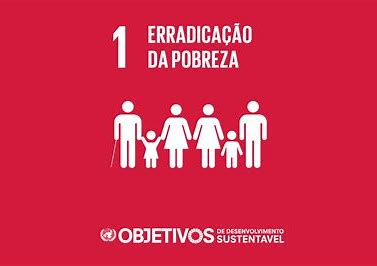

ODS Erradicação Da Pobreza:
A erradicação da pobreza é um dos Objetivos de Desenvolvimento Sustentável
(ODS) da ONU, visando eliminar a pobreza extrema e reduzir pela metade a pobreza
em todas as suas formas. Este objetivo abrange não apenas a falta de renda, mas
também a privação de direitos e oportunidades essenciais, como educação, saúde e
moradia. Alcançá-lo exige a colaboração entre governos, sociedade civil, setor
privado e organizações internacionais, além da implementação de políticas
inclusivas e sustentáveis que promovam o crescimento econômico equitativo e o
acesso igualitário a recursos e serviços. Só assim poderemos garantir um futuro
onde todos vivam com dignidade e prosperidade.
Desenvolvido por: Enzo Bossardi, aluno do SENAC.
